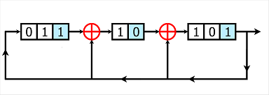

Cubik' Cipher
Table of contents
Introduction
Cubik’Cipher est un challenge de catégorie Hardware issu de l’édition 2022 du HackDay, se présentant comme ceci:
Il y’a un mois, un espion a réussi à s’infiltrer dans le repère secret d’un ennemi!
Celui ci était en train de développer son propre chiffreur de données!
Depuis il semblerait que l’ennemi l’ait terminé, à nous de construire le déchiffreur grâce auquel nous pourrons l’espionner sans qu’il s’en rende compte!
Le flag est de la forme HACKDAY{…}
Étant joint avec l’énoncé une archive contenant 5 fichiers:
flag.txt
test_vector.txt
cubik_cipher - Copie.vhd
cubik_pkg.vhd
key_randomize.vhd
Le fichier flag.txt contient une clé de 1024 bits et un flag chiffré de 576 bits. Le fichier test_vector.txt contient quant à lui un échantillon en clair du même format que le flag suivi de ce même échantillon chiffrée avec une autre clé.
On en déduit vite que le challenge est donc un mix Crypto/Hardware, implémentant un algorithme à inverser pour retrouver le flag en clair.
L’objectif sera donc de reprogrammer l’algorithme en Python pour pouvoir ensuite l’inverser.
En jetant un oeil au trois fichier restant je découvre avec effroi qu’il s’agit de code VHDL, et me souvenant d’un proverbe qu’on m’eut jadis donné : “VHDL, si vous ne connaissez pas, tant mieux pour vous” je pris peur mais décida nonobstant de me plonger dans le premier fichier: cubik_cipher - Copie.vhd.
Analyse du programme et réimplémentation en Python
Analyse du code principal
Armé de documentation, je découvre que ce code implémente une entité nommée cubik_cipher chargée de définir l’engine de chiffrement et qui prendra en entrée deux bitvectors, un de taille data_width nommé d_i et un de taille 1024 nommé key correspondants respectivements au flag à chiffrer et à la clé de chiffrement.
entity cubik_cipher is
generic (round_div_2 : positive := 8);
port (
resetn : in std_logic;
clk : in std_logic;
-- key
key : in std_logic_vector(1023 downto 0);
-- din
d_v_i : in std_logic;
d_i : in std_logic_vector(data_width-1 downto 0);
-- dout
d_c : out std_logic_vector(data_width-1 downto 0);
d_v_c : out std_logic
);
end entity;
On remarque par ailleurs que tout le système est soumis à une clock nommée clk ce qui est tout à fait normal étant donné que dans un code VHDL, tous les processus s’exécutent en même temps et qu’il est donc nécessaire de coordonner tout ca par une horloge.
En se penchant sur l’architecture du modèle, on découvre les différents signaux utilisés par le modèle. Voici les principaux:
key_w: Une constante de valeur 576 qui servira à tronquer la clékeyde 1024 bits.ctr_round: Un entier naturel compris entre 0 et 9, on suppose que le chiffrement fera 10 tours sur le flag.reg_cipher: Un bitvector de taille 576 qui contiendra les données à chiffrer durant les différents tours du chiffremenet.rkey: la troncature dekeyqui est passée en argument dans la fonction de chiffrement.
architecture rtl of cubik_cipher is
constant key_w : positive := 576;
type state is (idle, engine);
signal current_state,next_state : state;
signal ctr_round : natural range 0 to 9;
signal load : std_logic;
signal end_ctr,cmd_ctr : std_logic;
signal rkey : std_logic_vector(key_w-1 downto 0);
signal reg_cipher : std_logic_vector(d_i'range);
begin
Le reste des signaux faisants quant à eux, office de flags qui permettront au programme de modéliser l’execution séquentille de l’algorithme de chiffrement suivant:
-
La clé
keyest passée dans la fonctionkey_randomize(définie dans le fichierkey_randomize.vhd), la valeur de retour est stockée dansrkey. -
Le programme charge
d_idansreg_cipher -
Le programme appelle 9 fois la fonction round avec
reg_cipheretrkey -
A chaque tour, la fonction
key_randomizeest rappellée et sa valeur de retour est stockée dansrkey.
Analyse de la fonction key_randomize
La fonction key_randomize appellée à chaque tour se présente comme ceci:
entity key_randomize is
generic (key_w : positive := 32);
port (
resetn : in std_logic;
clk : in std_logic;
load : in std_logic;
key : in std_logic_vector(1023 downto 0);
key_r : out std_logic_vector(key_w-1 downto 0)
);
end entity;
architecture rtl of key_randomize is
signal reg : std_logic_vector(key'range);
begin
process (clk,resetn) is
begin
if resetn = '0' then
reg <= (others => '1');
elsif rising_edge(clk) then
if load = '1' then
reg <= key;
else
reg <= reg(reg'length-2 downto 0) & reg(reg'high);
reg(24) <= reg(23) xor reg(reg'high);
reg(421) <= reg(420) xor reg(reg'high);
reg(476) <= reg(475) xor reg(reg'high);
reg(545) <= reg(544) xor reg(reg'high);
reg(923) <= reg(922) xor reg(reg'high);
end if;
end if;
end process;
key_r <= reg(key_r'range);
end architecture;
Le paramètre load indique si la fonction est appellée pour la première fois, si c’est le cas, la fonction tronque juste la clé key pour garder seulement les 576 premiers bits et renvoie sa valeur dans key_r.
Si la fonction n’est pas appellée pour la première fois, elle applique un Registre à décalage à rétroaction linéaire de Galois sur la clé puis renvoie la troncature dans key_r. Cet algorithme servant à générer des nombres pseudo-aléatoires se schématise comme ceci:

Le bit de poids fort est placé au début de la chaine et xor au passage des bits sélectionnés dans la chaine. En python on modélisera donc cette fonction par:
def galois_lfsr(key):
key = list(key)
high_bit = key[1023]
key[23] = str(int(key[23]) ^ int(high_bit))
key[420] = str(int(key[420]) ^ int(high_bit))
key[475] = str(int(key[475]) ^ int(high_bit))
key[544] = str(int(key[544]) ^ int(high_bit))
key[922] = str(int(key[922]) ^ int(high_bit))
key = "".join(key)
key = high_bit + key[:1023]
return key
Analyse de la fonction de chiffrement
En inspectant le dernier fichier contenant la fonction de chiffrement round, on remarque que cette dernière est constituée de trois étapes qui exploiteront des types que le package a défini plus haut:
- Le
nonaire, un bitvector de 9 bits. - La
row, un tableau de 4nonaires. - La
matrice, un tableau de 4rows. - Le
cubix, un tableau de 4matrices.
La fonction va donc utiliser une matrice en 3 dimension dont chaque coefficient est un nonaire constitué de 9 bits appartenants à notre input.
Ce qui implique que dans un cubix il y’a:
4 * 4 * 4 * 9 bits = 576 bits, le nombre de bits de notre input,
le compte est bon!
Et c’est justement le rôle de la première fonction slv2cubix de ranger dans notre cubix chacun des bits du flag à chiffrer:
function slv2cubix(data : std_logic_vector(data_width-1 downto 0)) return cubix is
variable tmp : cubix;
begin
for k in cubix'range loop
tmp(k) := slv2matrix(data(144*(k+1)-1 downto 144*k));
end loop;
return tmp;
end slv2cubix;
function slv2matrix(data : std_logic_vector(matrix_width-1 downto 0)) return matrix is
variable tmp : matrix;
begin
for j in matrix'range loop
tmp(j) := slv2row(data(36*(j+1)-1 downto 36*j));
end loop;
return tmp;
end slv2matrix;
function slv2row(data : std_logic_vector(row_width-1 downto 0)) return row is
variable tmp : row;
begin
for i in row'range loop
tmp(i) := data(9*(i+1)-1 downto 9*i);
end loop;
return tmp;
end slv2row;
Lors d’une seconde étape, La fonction shiftmt est appellée avec en agument une liste de matrices et dont la valeur de retour est passée dans la la fonction mixcubix avec notre cubix. Lorsque l’on se penche sur cette dernière on remarque un enchainement peu commun d’opérations XOR à différents niveaux sur notre cubix avec notamment l’usage de deux fonctions mystérieuses : times et times2 qui est d’ailleurs commentée : -- GF_mult2 : function qui multiplie par 2.
La fonction shiftmt:
function shiftmt (mt : matrix_t; p : natural) return matrix_t is
variable tmp : matrix_t;
begin
for l in matrix_t'range loop
tmp(l) := mt((l+p) mod square_size);
end loop;
return tmp;
end shiftmt;
Les matrices utilisées:
-- m(x,y) y 0 1 2 3 x
constant m_0 : matrix_c :=(('0'&x"03", '0'&x"00", '0'&x"02", '0'&x"06"), -- 0
('0'&x"06", '0'&x"03", '0'&x"00", '0'&x"02"), -- 1
('0'&x"02", '0'&x"06", '0'&x"03", '0'&x"00"), -- 2
('0'&x"00", '0'&x"02", '0'&x"06", '0'&x"03")); -- 3
constant m_1 : matrix_c :=(('0'&x"06", '0'&x"04", '0'&x"03", '0'&x"00"),
('0'&x"00", '0'&x"06", '0'&x"04", '0'&x"03"),
('0'&x"03", '0'&x"00", '0'&x"06", '0'&x"04"),
('0'&x"04", '0'&x"03", '0'&x"00", '0'&x"06"));
constant m_2 : matrix_c :=(('0'&x"04", '0'&x"00", '0'&x"09", '0'&x"03"),
('0'&x"03", '0'&x"04", '0'&x"00", '0'&x"09"),
('0'&x"09", '0'&x"03", '0'&x"04", '0'&x"00"),
('0'&x"00", '0'&x"09", '0'&x"03", '0'&x"04"));
constant m_3 : matrix_c :=(('0'&x"02", '0'&x"04", '0'&x"00", '0'&x"09"),
('0'&x"09", '0'&x"02", '0'&x"04", '0'&x"00"),
('0'&x"00", '0'&x"09", '0'&x"02", '0'&x"04"),
('0'&x"04", '0'&x"00", '0'&x"09", '0'&x"02"));
La fonction mixrow, appellée dans la fonction mixmatrix:
function mixrow(r : row; m : matrix_c) return row is
variable tmp : row;
begin
for i in row'range loop
tmp(i) := times(m(i,0),r(0)) xor times(m(i,1),r(1)) xor times(m(i,2),r(2)) xor times(m(i,3),r(3));
end loop;
return tmp;
end mixrow;
On remarque alors une annotation en haut du fichier cubix_pkg.vhd:
-----------------------------------------------------------
-- FUNCTIONS
-----------------------------------------------------------
-- Primitive polynomial = D^9+D^4+1 -- GF(512)
-----------------------------------------------------------
Cette annotation nous signale que des opérations dans le groupe de Galois sont utilisées:
Cela signifie que dans notre cubix, chaque nonaire est l’équivalent d’un polynome de degré 8 et dont chacun des coefficients sont contenus dans
l’ensemble des classes d’équivalence de la relation de congruence modulo 2, Z/2Z… Mais concrètement qu’est ce que cela implique?
Cela implique que les opérations XOR qui sont utilisés dans les fonctions mixcubix,mixmatrix et mixrow sont en fait l’équivalent d’une simple application linéaire. Et ceci nous est confirmé par cette page sur laquelle on apprend que l’addition entre 2 polynomes dans le champ de Galois GF(512) se fait par un XOR et que la mulitlication se fait par un enchainement de décalage de bits vers la gauche et de XOR.
Ca ne vous rapelle rien?
Et oui, la fonction times2 servant à multiplier par 2 est en fait utilisée pour décaler les bits vers la gauche et implémente une multiplications entre les nonaires!
Une fois que l’on sait cela, le fonctionnement de mixcubix devient plus clair:
-
La fonction
shiftmtest appellée pour pouvoir réaranger la liste de matrices dans un nouvel ordre. -
Pour chaque matrice du
cubix, La fonctionmixmatrixest appelée avec en argument une des matrices du cubix ainsi que la nouvelle liste de matrices. -
Chaque row de la matrice est multipliée par une des matrices de la liste.
Pour inverser cet algorithme, il faudra donc inverser les matrices présentes dans la liste, ce qui est faisable avec la librairie pyfinite qui permet de créer des groupes finis comme celui dans lequelle on travaille:
from pyfinite import ffield, genericmatrix
GF_512 = ffield.FField(9)
XOR = lambda x,y: GF_512.Add(x,y)
MUL = lambda x,y: GF_512.Multiply(x,y)
DIV = lambda x,y: GF_512.Multiply(x, GF_512.Inverse(y))
def mix_cubix(cubix, matrix_list):
for i in range(4):
matrix_list_i = shift_matrix(matrix_list,i)
cubix[i] = matrix_str_to_int(cubix[i])
for j in range(4):
cubix[i].SetRow(j,matrix_list_i[j].LeftMulColumnVec(cubix[i].GetRow(j)))
cubix[i] = matrix_int_to_str(cubix[i])
return cubix
Puis la fonction roundcubix est appellée et qui va simplement faire un xor entre chaque nonaire de la clé de chiffrement et chaque nonaire de notre cubix actuel. Elle est donc modélisable dans GF(512) par une simple addition de matrice pour chaque matrice du cubix et du cubix de la clé:
def round_cubix(cubix,cubix_key):
return [matrix_int_to_str(matrix_str_to_int(cubix[i]) + matrix_str_to_int(cubix_key[i])) for i in range(4)]
La dernière transformation appliqué à notre input est une substitution des lignes de notre cubix:
function swap_rows (c: cubix) return cubix is
variable tmp :cubix;
begin
tmp (0)(0) := c(1)(1);
tmp (0)(1) := c(3)(3);
tmp (0)(2) := c(2)(2);
tmp (0)(3) := c(2)(1);
tmp (1)(0) := c(3)(1);
tmp (1)(1) := c(2)(0);
tmp (1)(2) := c(0)(1);
tmp (1)(3) := c(1)(2);
tmp (2)(0) := c(1)(0);
tmp (2)(1) := c(0)(3);
tmp (2)(2) := c(2)(3);
tmp (2)(3) := c(3)(0);
tmp (3)(0) := c(3)(2);
tmp (3)(1) := c(0)(0);
tmp (3)(2) := c(1)(3);
tmp (3)(3) := c(0)(2);
return tmp;
end swap_rows;
On la modélise donc simplement par:
def permutation(cubix):
tmp_cubix = [genericmatrix.GenericMatrix(size=(4,4),zeroElement=0,identityElement=1,add=XOR,mul=MUL,sub=XOR,div=DIV) for i in range(4)]
tmp_cubix[0].SetRow(0,cubix[1].GetRow(1))
tmp_cubix[0].SetRow(1,cubix[3].GetRow(3))
tmp_cubix[0].SetRow(2,cubix[2].GetRow(2))
tmp_cubix[0].SetRow(3,cubix[2].GetRow(1))
tmp_cubix[1].SetRow(0,cubix[3].GetRow(1))
tmp_cubix[1].SetRow(1,cubix[2].GetRow(0))
tmp_cubix[1].SetRow(2,cubix[0].GetRow(1))
tmp_cubix[1].SetRow(3,cubix[1].GetRow(2))
tmp_cubix[2].SetRow(0,cubix[1].GetRow(0))
tmp_cubix[2].SetRow(1,cubix[0].GetRow(3))
tmp_cubix[2].SetRow(2,cubix[2].GetRow(3))
tmp_cubix[2].SetRow(3,cubix[3].GetRow(0))
tmp_cubix[3].SetRow(0,cubix[3].GetRow(2))
tmp_cubix[3].SetRow(1,cubix[0].GetRow(0))
tmp_cubix[3].SetRow(2,cubix[1].GetRow(3))
tmp_cubix[3].SetRow(3,cubix[0].GetRow(2))
return tmp_cubix
Une fois les permutations effectuées, la fontion round extrait les données du cubix dans un bitvector et le retourne.
Le code de chiffrement en Python pour le chiffrement ressemble donc à ceci:
def encryption(data_bitvector, key_bitvector):
key_list = list()
for i in range(9):
key_list.append(key_bitvector)
cubix_key = fill_cubix(key_bitvector[0:576])
cubix = fill_cubix(data_bitvector)
cubix = mix_cubix(cubix,[m_0,m_1,m_2,m_3])
cubix = round_cubix(cubix,cubix_key)
cubix = permutation(cubix)
data_bitvector = extract_cubix(cubix)
key_bitvector = galois_lfsr(key_bitvector)
return (data_bitvector,key_list)
if __name__ == "__main__":
key = 0xf0ae2e1abee8afbe3ea424cc71f4ce17455a21d5df15cc4f6362e3af095cfb6da7188a9777c2c875ab39145a88a2142aea7b5411607110d70cd3d37c20f259b1920031990709d8e0e8d661b1a05fe8b5719aab6569835b3e52be738982608fda36549fd1e3398c725190356fbe97998b79f84f0ef23c4dea63898b52319a47a2
data = 0x4841434B4441590000000000000000000000000000000000000000000000000000000000000000000000000000000000000000000000000000000000000000000000000000000000
flag_encrypted = 0x79EEEF596B960C42262DFD1D0A2DB218FA3C71C681963F0CC389D3F0F5234C8023CA79D315186AF55621289F92AD6D9B657D999E074C84E13BFDAEDC94A3BA4FCB95B4013BFC40E5
key_bitvector = int_to_bin(key,1024)
data_bitvector = int_to_bin(data,576)
flag_encrypted_bitvector = int_to_bin(flag_encrypted,576)
data_bitvector,key_list = encryption(data_bitvector,key_bitvector)
Remarque:
VHDL agence en temps normal ses tableaux en little endian, c’est pourquoi il faut inverser le sens du bitvector key et data si on veut utiliser les tableaux dans le même sens que le code original.
De plus la liste key_list enregistre la clé utilisée lors de chaque tour afin de la réutiliser dans la fonction de déchiffrement.
Inversion de l’algorithme
Pour inverser l’algorithme, on procède de cette manière:
- On effectue les permutations inverses que celles de la fonction
swap_rows. - On réappelle la fonction
round_cubixcar dans le champ de Galois GF(512), l’addition est équivalente à la soustraction et elle passe de la même manière par le XOR. - On inverse la liste de clés, logique on déchiffre en commencant par le dernier tour qui a été effectué.
- On crée une fonction
reverse_mix_cubixqui va se comporter de la même manière que la fonctionmix_cubix, à un détail près: au lieu de multiplier chaquerowpar une matrice, elle va la diviser (La librairie pyfinite s’en chargera). - On extrait le bitvector du cubix et le tour est joué.
La fonction reverse_mix_cubix:
def reverse_mix_cubix(cubix, matrix_list):
for i in range(4):
matrix_list_i = shift_matrix(matrix_list,i)
cubix[i] = matrix_str_to_int(cubix[i])
for j in range(4):
cubix[i].SetRow(j,matrix_list_i[j].Solve(cubix[i].GetRow(j)))
cubix[i] = matrix_int_to_str(cubix[i])
return cubix
La fonction decryption:
def decryption(data_bitvector, key_list):
cubix = fill_cubix(data_bitvector)
for l in range(9):
key_bitvector = key_list[l]
cubix_key = fill_cubix(key_bitvector[0:576])
cubix = reverse_permutation(cubix)
cubix = round_cubix(cubix,cubix_key)
cubix = reverse_mix_cubix(cubix,[m_0,m_1,m_2,m_3])
extracted = extract_cubix(cubix)[::-1]
return extracted
Il ne nous reste plus qu’à assembler chaque bit du bitvector retourné pour obtenir le flag:
flag = list()
for i in range(0,576,8):
byte = extracted[i:i+8]
flag.append(chr(int(byte,2)))
print("".join(flag))
# HACKDAY{99b6b6d2c037a65d509c401c7d2f5052914e0a4e3420627d23d0b969daf1df3}
Voici, le code VHDL du challenge et le code Python du solver.
Conclusion
Ce challenge mixant Crypto et Hardware a été très intéressant, il m’a notamment permis d’apréhender le domaine de l’HDL et de mieux comprendre comment les groupes finis peuvent être utiles lorsque l’on construit des systèmes électroniques.